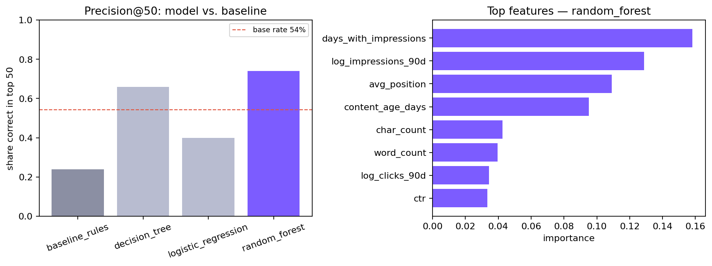
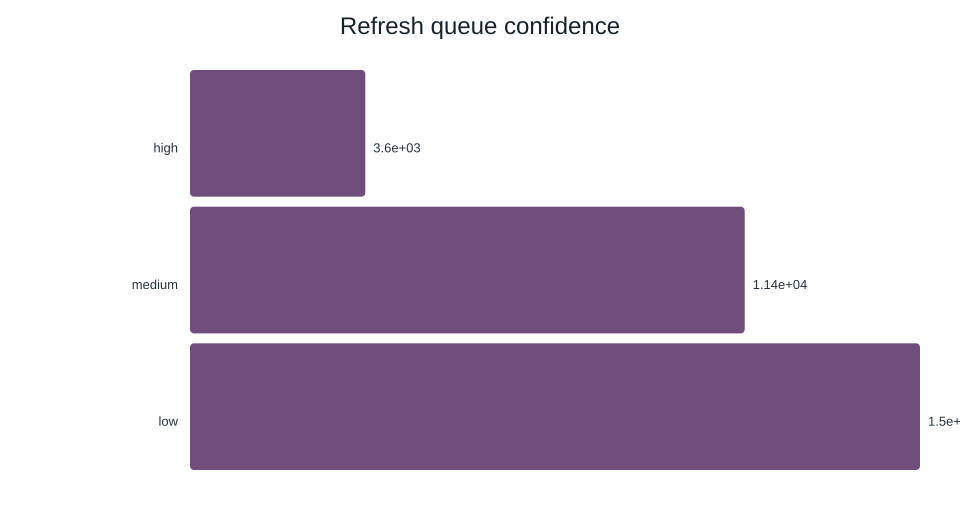

Which Pages Should You Refresh First?
A client-holdout-validated ranking model for content-refresh prioritization, built on FlyRank's anonymized search-performance dataset.
$ read abstract When a content team can only review a handful of pages this week, which ones matter most? This paper builds a model that ranks FlyRank content pages for refresh priority from 30,000 anonymized, pseudonymized rows of 90-day search and engagement signals — no titles, URLs, client names, or product flags included. Under a client-holdout split (whole clients withheld from training), a random-forest ranker reaches 74% precision in its top 50 picks, versus 24% for a transparent, hand-written baseline rule scored on the same split — a 3.1x lift over guessing with a spreadsheet. The model's ranking runs on observable signals (visibility, position, freshness, content depth) rather than FlyRank's own internal flags, so it earns its priority order from evidence rather than repeating an existing decision. It is built and framed as decision support for a human reviewer, not as an autonomous publishing or causal-impact system.
The problem: too many pages, not enough hours
A content or SEO team responsible for hundreds or thousands of live pages can only manually review a small slice of them in any given week. Picking that slice by gut feel — "the oldest pages," "whatever a client asks about" — means some quietly-declining pages never get looked at, while healthy pages absorb review time they didn't need.
The real scenario this paper supports: a reviewer opens Monday morning with two hours set aside for page refresh work. Which twenty or fifty pages should be at the top of that list, and why should they trust the order? That is the decision this model is built to support — not to auto-edit pages, not to replace editorial judgment, but to make sure the limited review time goes where the evidence points first.
The cost of getting the order wrong is asymmetric and quiet: a page that should have been reviewed keeps losing visibility for another cycle, while a healthy page absorbs an hour it didn't need. A ranking that reliably beats "pick pages at random" — even an imperfect one — changes where that hour goes.
A 30K-row public-safe slice of a much larger warehouse
FlyRank's full research release for this internship is a daily content-performance warehouse of roughly 78.8 million fact rows, spanning ~520,000 pseudonymized content items across 104 pseudonymized clients. This paper does not query that warehouse directly. It works entirely from the bundled, anonymized starter export — data/raw/content_refresh_anonymized.csv — 30,000 rows, one per pseudonymized content item, safe to commit and publish.
What's in the export
One row per content item, describing a 90-day and trailing-30-day window: search visibility (impressions, clicks, CTR, average position), engagement (sessions, engagement rate, scroll rate, AI-referral sessions), content metadata (word/char count, content type, intent), and derived tiers (freshness, age, position, impression volume).
What was excluded, and why
- No client names, domains, URLs, page titles, or raw search queries — never present in this export in the first place.
- No FlyRank product decision flags (e.g. internal health scores or "quick win" flags) — the starter data ships observable signals only, so any ranking has to be earned from evidence, not learned from FlyRank's own existing rule.
- Hashed
content_id/client_idare pseudonymous grouping keys used only to build the client-holdout split below — never fed to the model, never mapped back to anything. - Rows with zero 90-day impressions or under 90 days of content age are dropped before modeling — no visibility yet, or too new to have an established trend.
Label, features, baseline, split, leakage
Label — a stated proxy, not a future outcome
is_declining_label = 1 when trend_direction == "down", computed from the same 90-day window as the features. This is a current-window proxy — it flags "this page currently looks like it's declining," not "this page will decline next month." A future-looking label (features(t) → outcome(t+30)) would need the full time-series warehouse and is named directly in Limitations.
Baseline — the honest bar to beat
A transparent, hand-written rule with no training step — the kind a team could build in a spreadsheet:
baseline_refresh_score =
0.40 · visibility_score
+ 0.30 · freshness_risk_score
+ 0.25 · position_opportunity_score
+ 0.05 · depth_gap_scoreEach component is a percentile rank of one observable signal (logged impressions, days since last update, position opportunity, content depth).
Features
18 numeric signals — logged impressions/clicks/sessions, CTR, average position, engagement rate, scroll rate, content age, freshness, word/char count, AI-referral share — and 8 categorical signals — content type, intent, and freshness/age/position/impression tiers. All are knowable from the observed 90-day window; none are derived from the label.
Validation design — client holdout
Clients, not rows, are split 80/20 (27,675 train / 2,325 test rows). Every content item in the test set belongs to a client the model never trained on. A random row-level split would let the model partly memorize per-client quirks and look better than it really is — the client holdout asks the honest question: does this generalize to a client it hasn't seen?
Leakage check
The label's source column, trend_pct, is confirmed absent from every model's feature list. As a live test, injecting it back in deliberately drives ROC AUC from 0.696 to 1.000 — confirming the leak-detector actually catches a leak before trusting any other number.
| Feature set | ROC AUC |
|---|---|
| Honest features only | 0.696 |
+ trend_pct (deliberate leak) | 1.000 ← confession |
trend_pct and trend_direction are excluded from every model reported in Results.
Model vs. baseline, same split, same metric
Base rate matters first: 54.2% of pages in this slice already carry the declining label, so any score below has to be read against that, not against zero.
| System | ROC AUC | Avg. precision | Precision@20 | Precision@50 | Precision@100 |
|---|---|---|---|---|---|
| Baseline rule | 0.627 | 0.468 | 0.15 | 0.24 | 0.36 |
| Logistic regression | 0.700 | 0.522 | 0.35 | 0.40 | 0.44 |
| Decision tree | 0.742 | 0.575 | 0.65 | 0.66 | 0.68 |
| Random forest (best) | 0.750 | 0.618 | 0.65 | 0.74 | 0.72 |
Best model selected on precision@50 on the client-holdout test set. Of the top 50 pages the random forest flags first, 37 carry the declining label — versus 12 for the hand-written rule on the same 50-page cut.

What's actually driving the ranking
The top features are observable visibility and structure signals — days_with_impressions, log_impressions_90d, avg_position, and content_age_days lead, followed by content depth (char_count, word_count) and click volume. None of these are FlyRank's own decision flags — the model is reading the same kind of evidence a human reviewer would, just faster and more consistently across thousands of rows.


What this work cannot claim
Writing this section before a reader has to find the gaps themselves is part of the point.
- Proxy label, not a future outcome. The label is computed from the same window as the features — it measures apparent current decline, not predicted future decline. This paper cannot claim it "predicts which pages will lose traffic next month."
- Small, single-snapshot slice. 30,000 rows across 32 clients is enough to compare a model against a baseline honestly, but not enough to claim this ranking holds across FlyRank's full ~79M-row, multi-year, 104-client warehouse.
- No causal claim. The model shows an association between observable signals and the current-decline label. It does not show that refreshing a page causes recovery — that requires an experiment (e.g. randomized refresh vs. no-refresh), not this observational model.
- Precision, not perfection. Even the best model misses roughly 3 in 10 of its top-50 picks by this label's own definition. It is built as a prioritization aid for a human reviewer, not an autonomous decision system.
- Favorable class balance. The label sits close to 50/50 in this slice (54.2% declining), which makes precision@K easier to earn than on a rarer target — worth remembering before comparing this score to a differently-balanced problem.
- Content-type imbalance. "Keyword article" pages dominate the slice (~91%); "feedly article" and "comparison article" rows are thin, so per-content-type conclusions are less reliable.
The action playbook
Built from the final ranked queue, which blends the model's probability with the transparent baseline score (70% model, 30% baseline) so the ranking keeps both the learned signal and a human-auditable rule in view.
-
1
Start with high-confidence "refresh & review CTR" rows
These pages already get real impressions but convert poorly on click-through and look like they're declining. Fixing the title/snippet angle is cheap relative to the visible demand already there.
-
2
Then high-confidence plain "refresh" rows
Declining-with-demand pages without a specific CTR or engagement flag — a direct content refresh (update facts, restructure, add missing sections) is the right first move.
-
3
Spot-check "expand & refresh" (thin content) rows
A small group — under 1,200 words with real impressions — but high leverage per page. Thin pages that already have traffic are often the fastest wins.
-
4
Use "monitor" rows as a watchlist, not a queue
Low current signal for action — re-score after the next data refresh instead of spending review time on them now.
-
5
Treat "low confidence" rows as informational only
Confidence requires real impressions, real sessions, and model probability ≥ 0.5 together. Rows that fail that bar need more evidence before anyone commits review time.
No-go list
- Never auto-publish or auto-edit a page from this score alone.
- Never auto-message a client based on the queue.
- Never present the queue as predicting traffic recovery — it ranks review priority, nothing more.
- High confidence still requires a human to confirm the page and its context before any action.
Rerun every number in this paper
Every metric above comes from a fresh, scripted run — nothing was hand-edited after the fact.
git clone https://github.com/amanatewell/flyrank-ML-internship.git
cd flyrank-ML-internship
pip install -r requirements.txt
# Reference pipeline: data -> baseline -> model -> queue -> report
python scripts/run_all.py
# Capstone notebook: question -> data -> methodology -> results
# -> limitations -> recommendations -> artifacts
jupyter nbconvert --to notebook --execute work/notebooks/capstone.ipynbRandom seed fixed at 42 throughout (baseline, model training, client-holdout split). Pipeline outputs land in outputs/; notebook exports land in work/outputs/ and work/figures/, and this page's chart assets are copied to docs/assets/charts/.
- Notebook: work/notebooks/capstone.ipynb
- Reference pipeline: scripts/01–05
- Full metrics: outputs/model_report.md
- Ranked queue sample (pseudonymous IDs only — the full 30,000-row queue is a regenerated artifact, gitignored by design and reproducible via
python scripts/run_all.py): outputs/refresh_queue_sample.csv - Repo root: github.com/amanatewell/flyrank-ML-internship
Built on real production search data
This research is built on the FlyRank ML Internship dataset — an anonymized, pseudonymized export from FlyRank's production search-intelligence warehouse, made available for this internship program. Crediting the data source is standard research practice, and this paper would not exist without it.
All identifying information (client names, domains, URLs, titles, and raw queries) was removed before this data reached the author; see the data-use and public-safety rules for the exact contract this paper follows.
flyrank.ai ↗